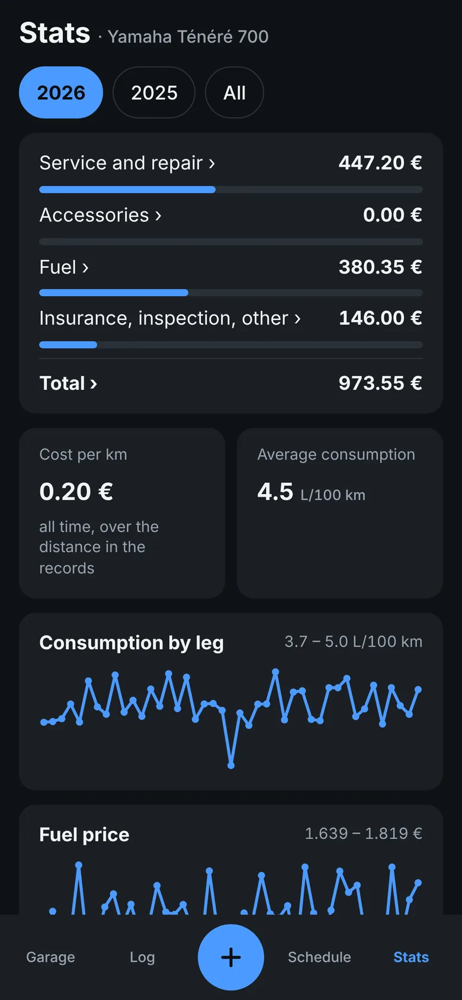

Tee.↗ Garaaž.↘ Arvestus.↘
Mootorrattakanal ilma läikepaberita: sõidud, hooldus oma kätega ja ausad numbrid selle kohta, palju ratta omamine tegelikult maksab.
Mootorrattad, nagu need on.
Filmin seda, mida ise teen: kuhu sõidan, mida garaažis vahetan ja palju see maksab. Ilma lavastuse ja ühepäevaste ülevaadeteta.
Sõidud
Marsruudid, ilm, väsimus — kõik see, mis reklaamidest välja jääb.
Oma kätega
Õli, kett, pidurid, kulumaterjalid: samm-sammult, pingutusmomentide ja tootekoodidega.
Ausad numbrid
Iga tankimine ja iga tšekk on kirja pandud. Sellest said alguse nii tabel kui ka rakendus.



Tolimoto Log
Mootorratta ja auto hoolduse ning tankimiste päevik. Mäletab, millal õli vahetada, arvutab kütusekulu ja väljaminekud — ja hoiab kõik sinu juures.
- Tankimine ühe puudutusegaPõhinupp on esimesel ekraanil, sõiduki valid pühkimisega.
- Hooldusgraafik läbisõidu ja aja järgiMida ja millal vahetada — selge olekuga.
- Kütusekulu ja väljaminekudIga tankimise, iga aasta kaupa ja kilomeetri hind.
- Ilma registreerimise ja võrgutaKirjed on otse sinu telefonis.
- Google'i tabel — soovi korralKahesuunaline sünkroonimine, tšekkide fotod sinu enda Drive'is.
- Import Fuellyst ja FueliostTankimiste ajalugu kolib üle minutiga.
Tolimotol ei ole serverit, kus su andmed oleksid. Kirjed jäävad sinu seadmesse ja Google'i ühendamisel sinu enda tabelisse ning Drive'i kausta. Rakendus näeb ainult faile, mille ta ise lõi. Privaatsuspoliitika
Tasuta. Kõigile. Alatiseks.
Tolimoto Log on tasuta ja jääb selleks: ilma reklaamide, tellimuste ja tasuliste funktsioonideta. Me ei teeni sellega midagi — teeme seda puhtast entusiasmist, motomeestelt motomeestele.
Mõned kulud siiski on: domeen ja arendustööriistad. Kui rakendusest oli kasu ja tahad aitäh öelda, tangi meile liiter kütust. See on vabatahtlik ega ava midagi lisaks — kõik on niigi kõigile avatud.
⛽ Tangi liiter kütust Ko-fisAvaneb Ko-fi leht. Makse toimub seal — sinu kaardiandmeid me ei näe.
Võta ühendust.
Küsimused rakenduse või tabeli kohta, ideed videoteks, koostöö — kirjuta meile.